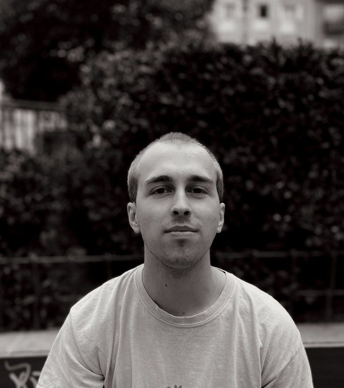

Hi! My name is Carl Engstler, I am a 25 year old masters student of architecture. I am based in Valencia, Spain. My website is designed to show you my work and give you an idea of how I design. In projects you can find a selection of my best or most interesting work. This website represents my digital portfolio while showing my interest in design going way beyond architectural design. My versatility in interests in different design fields allows me to cooperate with you in any field. Through my experience, integrated AI-workflows (like this website) and just a fantastic general interest in learning and designing anything new I can offer highly efficient designs, integrations and consulations.
Work experience
Over 1 year working as an energy consultant at enter GmbH in Berlin. With the title of an energy efficiency expert and deep knowledge for technical sanitation I was able to successfully consult over 150 clients modeling each of their houses in our energy consulting tools.
Currently I am functioning in a student reviewing position for StiL: I am a crucial voice in deciding which innovation will get advanced and subsidies in Germany.
Education
IU - Internationale Hochschule; Masters degree since May 2024 to now.
LUH - Leibniz Universität Hannover; Bachelors degree 2018-2021.
About this website
This website was designed and built with the assistance of Claude Code. This website was part of a project where I took the role of a creative director and oversaw claude code - the website designer. You can see the finished project: a website as a manifestation of my digital creative portfolio.